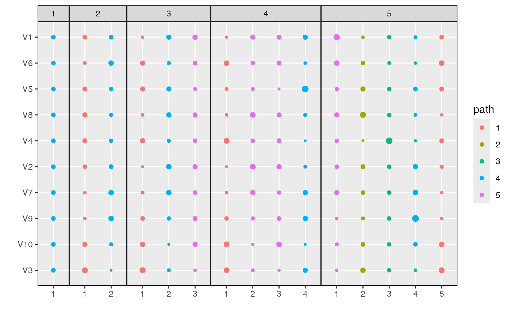

Align topics from distinct LDA models
align_topics.RdThis function takes a list of LDA models and returns an object of class
alignment. Each element in the models list must be itself a named
list, corresponding to the mixed memberships ($gamma) and topics ($beta). The
resulting alignment object can be plotted using `plot` and its weights can be
extracted using the `weights` accessor function. See the documentation for
class alignment for further details.
align_topics(models, comparisons = "consecutive", method = "product", ...)
Arguments
| models | (required) a list of LDA models object. Each list component
must be a list with two named entries, $gamma (containing mixed memberships)
and $beta (containing topic parameters in log sapce). See
|
|---|---|
| comparisons | (optional) either a character indicating if topics
should be aligned between |
Value
An object of class alignment providing the weights between
every pair of topics of each model pairs in the input edgelist
(comparisons).
See also
alignment
Examples
library(purrr) data <- rmultinom(10, 20, rep(0.1, 20)) lda_params <- setNames(map(1:5, ~ list(k = .)), 1:5) lda_models <- run_lda_models(data, lda_params)#>#>#>#>#>alignment <- align_topics(lda_models) alignment#> # An alignment: 5 models, 15 topics: #> # A tibble: 6 x 8 #> m m_next k_LDA k_LDA_next document_mass weight norm_weight fw_weight #> <fct> <fct> <int> <int> <dbl> <dbl> <dbl> <dbl> #> 1 1 2 1 1 10.0 0.500 1 0.500 #> 2 1 2 1 2 10.0 0.500 1 0.500 #> 3 2 3 1 1 3.33 0.167 0.500 0.333 #> 4 2 3 1 3 3.33 0.167 0.500 0.333 #> 5 2 3 1 2 3.33 0.167 0.500 0.333 #> 6 2 3 2 1 3.33 0.167 0.500 0.333 #> # … with 34 more rowsalign_topics(lda_models, comparisons = "all")#> # An alignment: 5 models, 15 topics: #> # A tibble: 6 x 7 #> m m_next k_LDA k_LDA_next document_mass weight norm_weight #> <fct> <fct> <int> <int> <dbl> <dbl> <dbl> #> 1 1 2 1 1 10.0 0.500 1 #> 2 1 2 1 2 10.0 0.500 1 #> 3 1 3 1 1 6.67 0.333 0.5 #> 4 1 3 1 2 6.67 0.333 0.5 #> 5 1 3 1 3 6.67 0.333 0.5 #> 6 1 4 1 1 5.00 0.250 0.333 #> # … with 79 more rows#> # A tibble: 40 x 8 #> m m_next k_LDA k_LDA_next document_mass weight norm_weight fw_weight #> <fct> <fct> <int> <int> <dbl> <dbl> <dbl> <dbl> #> 1 1 2 1 1 10.0 0.500 1 0.500 #> 2 1 2 1 2 10.0 0.500 1 0.500 #> 3 2 3 1 1 4.02 0.201 0.603 0.402 #> 4 2 3 1 3 2.61 0.130 0.391 0.261 #> 5 2 3 1 2 3.38 0.169 0.507 0.338 #> 6 2 3 2 1 2.65 0.132 0.397 0.265 #> 7 2 3 2 3 4.06 0.203 0.609 0.406 #> 8 2 3 2 2 3.29 0.164 0.493 0.329 #> 9 3 4 1 1 2.67 0.134 0.535 0.401 #> 10 3 4 1 4 1.77 0.0884 0.354 0.265 #> # … with 30 more rowsmodels(alignment)#> $`1` #> $`1`$gamma #> [,1] #> [1,] 1 #> [2,] 1 #> [3,] 1 #> [4,] 1 #> [5,] 1 #> [6,] 1 #> [7,] 1 #> [8,] 1 #> [9,] 1 #> [10,] 1 #> [11,] 1 #> [12,] 1 #> [13,] 1 #> [14,] 1 #> [15,] 1 #> [16,] 1 #> [17,] 1 #> [18,] 1 #> [19,] 1 #> [20,] 1 #> #> $`1`$beta #> [,1] [,2] [,3] [,4] [,5] [,6] [,7] #> [1,] -2.302585 -2.302585 -2.302585 -2.302585 -2.302585 -2.302585 -2.302585 #> [,8] [,9] [,10] #> [1,] -2.302585 -2.302585 -2.302585 #> #> #> $`2` #> $`2`$gamma #> [,1] [,2] #> [1,] 0.5003269 0.4996731 #> [2,] 0.5003135 0.4996865 #> [3,] 0.4999253 0.5000747 #> [4,] 0.4974805 0.5025195 #> [5,] 0.5014542 0.4985458 #> [6,] 0.5019856 0.4980144 #> [7,] 0.5037180 0.4962820 #> [8,] 0.5016356 0.4983644 #> [9,] 0.4938493 0.5061507 #> [10,] 0.4976158 0.5023842 #> [11,] 0.5020686 0.4979314 #> [12,] 0.4978190 0.5021810 #> [13,] 0.4991792 0.5008208 #> [14,] 0.5012828 0.4987172 #> [15,] 0.4966875 0.5033125 #> [16,] 0.4993982 0.5006018 #> [17,] 0.5008970 0.4991030 #> [18,] 0.5000613 0.4999387 #> [19,] 0.5032735 0.4967265 #> [20,] 0.5010125 0.4989875 #> #> $`2`$beta #> [,1] [,2] [,3] [,4] [,5] [,6] [,7] #> [1,] -2.131958 -2.358895 -2.300274 -2.354847 -2.726616 -1.941845 -1.964927 #> [2,] -2.508222 -2.249327 -2.304899 -2.252965 -2.005992 -2.871708 -2.815546 #> [,8] [,9] [,10] #> [1,] -2.634814 -2.579452 -2.352428 #> [2,] -2.053845 -2.086172 -2.255153 #> #> #> $`3` #> $`3`$gamma #> [,1] [,2] [,3] #> [1,] 0.3270454 0.3450129 0.3279417 #> [2,] 0.3329323 0.3347065 0.3323612 #> [3,] 0.3341666 0.3324938 0.3333395 #> [4,] 0.3322814 0.3323364 0.3353822 #> [5,] 0.3337882 0.3333313 0.3328805 #> [6,] 0.3345213 0.3326808 0.3327979 #> [7,] 0.3327742 0.3382051 0.3290207 #> [8,] 0.3353288 0.3302728 0.3343984 #> [9,] 0.3302293 0.3353779 0.3343928 #> [10,] 0.3348242 0.3271260 0.3380499 #> [11,] 0.3359528 0.3292745 0.3347727 #> [12,] 0.3317388 0.3350878 0.3331734 #> [13,] 0.3332628 0.3325523 0.3341850 #> [14,] 0.3331807 0.3349863 0.3318330 #> [15,] 0.3326484 0.3314883 0.3358632 #> [16,] 0.3323477 0.3357340 0.3319183 #> [17,] 0.3349163 0.3319174 0.3331663 #> [18,] 0.3318861 0.3354779 0.3326360 #> [19,] 0.3341853 0.3343919 0.3314228 #> [20,] 0.3384405 0.3246051 0.3369544 #> #> $`3`$beta #> [,1] [,2] [,3] [,4] [,5] [,6] [,7] #> [1,] -1.901545 -2.522420 -1.941948 -2.073159 -2.796098 -1.930055 -2.626156 #> [2,] -2.970360 -2.038038 -4.318412 -3.348310 -2.186731 -2.308346 -1.629439 #> [3,] -2.308209 -2.414365 -1.942697 -1.972506 -2.066526 -2.891682 -3.455939 #> [,8] [,9] [,10] #> [1,] -3.294215 -2.509934 -2.260771 #> [2,] -1.620552 -2.458059 -2.540491 #> [3,] -2.732934 -2.016595 -2.146345 #> #> #> $`4` #> $`4`$gamma #> [,1] [,2] [,3] [,4] #> [1,] 0.2456764 0.2510420 0.2461098 0.2571717 #> [2,] 0.2502554 0.2485240 0.2498617 0.2513589 #> [3,] 0.2504561 0.2503654 0.2499451 0.2492334 #> [4,] 0.2492425 0.2503030 0.2511639 0.2492906 #> [5,] 0.2500540 0.2504179 0.2495210 0.2500072 #> [6,] 0.2500860 0.2524922 0.2489982 0.2484236 #> [7,] 0.2497955 0.2492492 0.2475366 0.2534188 #> [8,] 0.2511528 0.2497765 0.2507372 0.2483335 #> [9,] 0.2482470 0.2488825 0.2507876 0.2520830 #> [10,] 0.2512229 0.2490959 0.2532408 0.2464404 #> [11,] 0.2516246 0.2499240 0.2509000 0.2475514 #> [12,] 0.2493387 0.2485552 0.2503953 0.2517108 #> [13,] 0.2497533 0.2505972 0.2503412 0.2493083 #> [14,] 0.2501271 0.2494071 0.2493266 0.2511392 #> [15,] 0.2494682 0.2510713 0.2513522 0.2481084 #> [16,] 0.2490377 0.2505695 0.2488397 0.2515532 #> [17,] 0.2508422 0.2504633 0.2497992 0.2488952 #> [18,] 0.2486632 0.2511801 0.2490888 0.2510678 #> [19,] 0.2504770 0.2509021 0.2485379 0.2500831 #> [20,] 0.2544356 0.2470569 0.2534880 0.2450195 #> #> $`4`$beta #> [,1] [,2] [,3] [,4] [,5] [,6] [,7] #> [1,] -1.763290 -2.944228 -2.012293 -1.910008 -2.847080 -1.950195 -2.582730 #> [2,] -2.821157 -1.607197 -2.133656 -3.043107 -2.163141 -2.230054 -2.585981 #> [3,] -2.176140 -2.840270 -1.996445 -1.799513 -2.101985 -2.914658 -3.420377 #> [4,] -2.891174 -2.423995 -4.412096 -3.248639 -2.255771 -2.342887 -1.530705 #> [,8] [,9] [,10] #> [1,] -3.257906 -2.477163 -2.345081 #> [2,] -2.736005 -2.446214 -2.082117 #> [3,] -2.676107 -1.960040 -2.224744 #> [4,] -1.479264 -2.424571 -2.639206 #> #> #> $`5` #> $`5`$gamma #> [,1] [,2] [,3] [,4] [,5] #> [1,] 0.1967365 0.2015594 0.1967621 0.2007281 0.2042140 #> [2,] 0.2000854 0.2007400 0.1997141 0.1987196 0.2007409 #> [3,] 0.2000959 0.2011030 0.1997646 0.1999977 0.1990388 #> [4,] 0.1997789 0.1987012 0.2011664 0.2005440 0.1998095 #> [5,] 0.1998891 0.1996312 0.1996311 0.2003068 0.2005418 #> [6,] 0.2000928 0.1980686 0.1995441 0.2022172 0.2000774 #> [7,] 0.1995865 0.2017014 0.1979694 0.1991807 0.2015621 #> [8,] 0.2008549 0.1989948 0.2007633 0.1999382 0.1994488 #> [9,] 0.1983655 0.2052060 0.1995872 0.1984161 0.1984252 #> [10,] 0.2012611 0.1978738 0.2027794 0.1995673 0.1985185 #> [11,] 0.2013675 0.1977574 0.2009932 0.2002407 0.1996412 #> [12,] 0.1992832 0.2027015 0.1999276 0.1984858 0.1996019 #> [13,] 0.1997849 0.1992846 0.2003339 0.2005719 0.2000247 #> [14,] 0.2000801 0.2003741 0.1995033 0.1995050 0.2005376 #> [15,] 0.1996533 0.1983681 0.2011660 0.2009838 0.1998287 #> [16,] 0.1988699 0.2032352 0.1985737 0.1999403 0.1993809 #> [17,] 0.2004567 0.2006540 0.1997930 0.2002151 0.1988812 #> [18,] 0.1989956 0.2000949 0.1992203 0.2008816 0.2008076 #> [19,] 0.2006054 0.1973002 0.1992719 0.2011890 0.2016335 #> [20,] 0.2041765 0.1967018 0.2035840 0.1983071 0.1972306 #> #> $`5`$beta #> [,1] [,2] [,3] [,4] [,5] [,6] [,7] #> [1,] -1.675672 -2.918823 -2.030783 -1.762641 -2.924967 -2.099124 -2.616875 #> [2,] -2.861626 -2.831998 -2.263726 -3.516190 -2.274182 -1.991716 -2.735716 #> [3,] -2.090937 -2.822317 -2.004924 -1.637005 -2.158526 -3.052117 -3.463148 #> [4,] -2.749745 -1.510576 -2.148199 -2.918837 -2.197089 -2.338538 -2.562964 #> [5,] -2.687997 -2.235784 -4.315320 -2.997329 -2.146958 -2.329647 -1.371090 #> [,8] [,9] [,10] #> [1,] -4.075213 -2.456993 -2.262836 #> [2,] -1.121015 -2.527965 -3.211531 #> [3,] -3.530882 -1.932672 -2.123574 #> [4,] -3.534135 -2.416466 -1.955518 #> [5,] -2.313830 -2.298357 -2.359289 #> #>